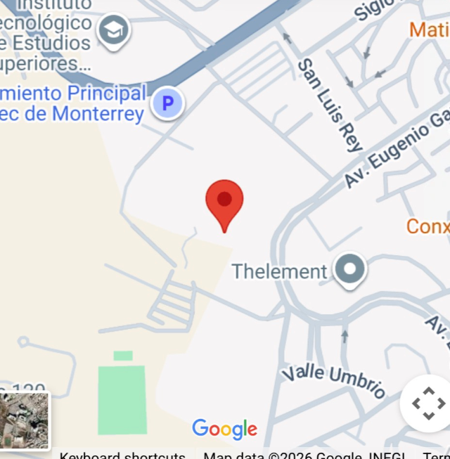

Bombón Lomas
La originalLomas del Tecnológico, 78215 San Luis Potosí, S.L.P.
Nuestra primera vitrina, a unos pasos del Tec. Ideal para el antojo entre clases: pide un "café + galleta" y quédate a estudiar en la barra.
| Lunes a viernes | 8:00 – 20:00 |
| Sábado | 9:00 – 21:00 |
| Domingo | 10:00 – 18:00 |
- Wi-Fi
- Café de especialidad
- Estacionamiento